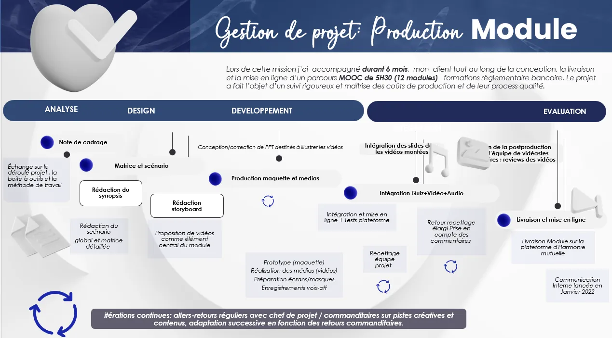
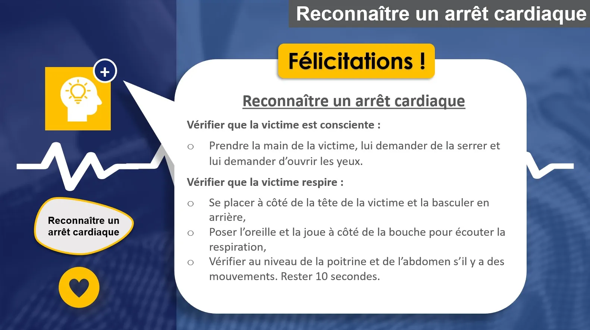
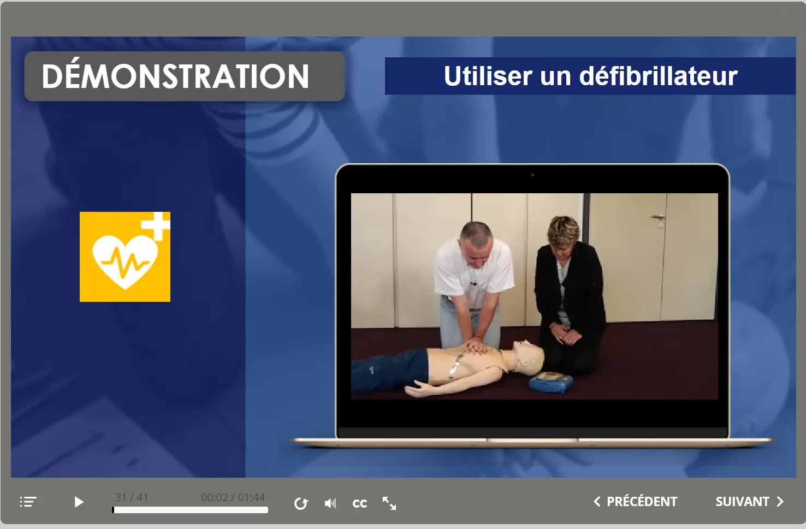

Module auto-formatif
Arrêt cardiaque chez l'adulte —
Les gestes qui sauvent
Module e-learning de sensibilisation conçu pour Harmonie Mutuelle — 15 minutes pour apprendre à reconnaître un arrêt cardiaque, alerter les secours et intervenir en attendant leur arrivée.

Contexte
Ce module a été conçu pour aider les employés d'Harmonie Mutuelle à acquérir les connaissances et compétences nécessaires pour intervenir rapidement et efficacement en cas d'urgence cardiaque.
En France, plus de 50 000 personnes meurent chaque année d'un arrêt cardiaque — première cause de décès chez les femmes. La réactivité des témoins dans les premières minutes est déterminante pour la survie.
Le module intègre des vidéos de simulation interprétées par un expert responsable sécurité chez Harmonie Mutuelle, ainsi que des séries d'exercices interactifs. Il a été livré sur la plateforme LMS interne et accompagné d'une communication interne de lancement.
Objectifs
- check_circle Reconnaître les signes d'un arrêt cardiaque et effectuer les contrôles
- check_circle Alerter les secours avec les bonnes informations
- check_circle Pratiquer un massage cardiaque en attendant les secours
- check_circle Utiliser un défibrillateur automatique
Aperçu du module
Clique sur une image pour l'agrandir.






Ma démarche
Storytelling d'amorce
L'histoire d'Helena — une collègue fictive confrontée à une urgence cardiaque — crée un engagement émotionnel immédiat et ancre l'apprentissage dans un contexte réel et mémorisable.
Vidéos de démonstration
Des séquences vidéo interprétées par un expert interne montrent les gestes étape par étape — massage cardiaque, utilisation du défibrillateur — pour lever les freins à l'action.
Évaluation formative
5 questions interactives, dont des exercices de drag & drop, permettent de valider les acquis sur les 5 thématiques clés avant la conclusion et la synthèse.
Architecture pédagogique — 5 phases
Durée totale : 15 minutes. Conçu selon le modèle ADDIE.
| Phase | Activité | Durée |
|---|---|---|
| Accroche | Présentation & quiz introductif | 3 min |
| Découverte | Chiffres & contexte | 2 min |
| Assimilation | 5 situations à analyser | 7 min |
| Renforcement | Quiz d'évaluation | 2 min |
| Conclusion | Clôture & ressources | 1 min |
Gestion de projet & production
Itérations continues avec le chef de projet et les commanditaires — allers-retours réguliers sur les pistes créatives, adaptation successive en fonction des retours terrain.
Note de cadrage · Échanges commanditaires · Scénario global & matrice
Synopsis · Storyboard · Proposition vidéo comme élément central
Maquette · Médias (vidéos) · Écrans Storyline · Voix-off · Intégration Quiz
Recettage · Retours équipe · Livraison LMS · Communication interne

Impact & résultats
Le module a été déployé sur la plateforme LMS d'Harmonie Mutuelle en janvier 2022, accompagné d'une communication interne de lancement ciblant l'ensemble des collaborateurs.
En combinant storytelling d'amorce, vidéos de démonstration expertes et exercices interactifs dans un format court de 15 minutes, le module vise un double objectif : réduire l'inhibition à agir et ancrer les bons réflexes dans la mémoire procédurale.
- check_circle Livré et déployé sur le LMS Harmonie Mutuelle
- check_circle Format 15 min — accessible PC, mobile & tablette
- check_circle Storytelling + vidéos experts + quiz évaluatif
- check_circle Communication interne de lancement en janvier 2022